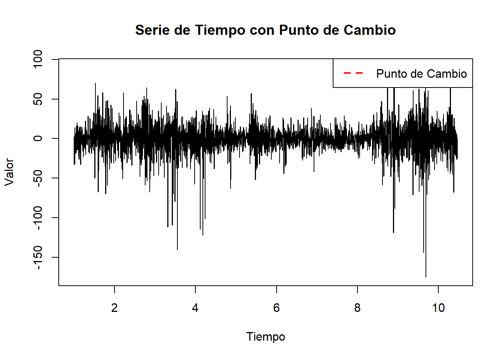
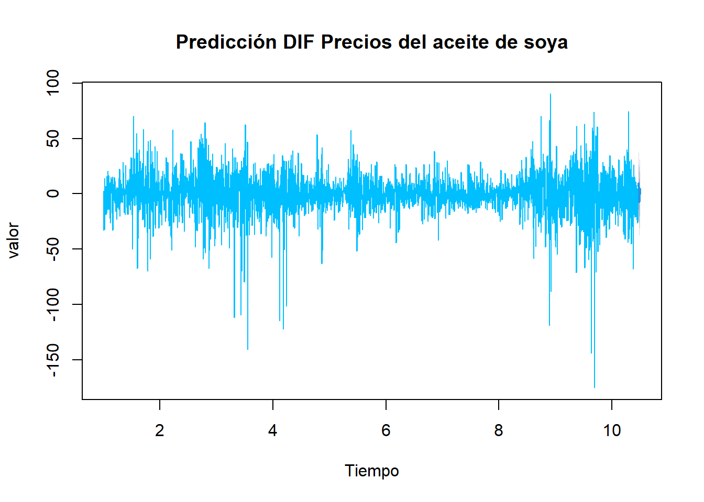

Chapter 12 ARIMA
ARIMA es como un método o herramienta que nos ayuda a entender y prever cómo se comportará una secuencia de números en el futuro, basándose en cómo se ha comportado en el pasado.
## Series: soybean_ts
## ARIMA(0,0,0) with zero mean
##
## sigma^2 = 314.7: log likelihood = -14842.62
## AIC=29687.25 AICc=29687.25 BIC=29693.39Conclusión:
El resultado de auto.arima() elige un modelo ARIMA(0,0,0) con media cero,indica según el análisis que no hay patrones, ritmos, ni tendencias claras en los datos de la serie de tiempo del precio del aceite de soya.
Los valores de la serie de tiempo del precio delaceite de soya son como un conjunto de números aleatorios, o “ruido blanco”, sin conexión aparente entre ellos. En otras palabras, cada punto de datos es independiente de los otros y no está influenciado por los valores pasados en la serie.
## [1] 3456## [1] 0## [1] "ts"## [1] 0# Instalar el paquete changepoint
#install.packages("changepoint")
# Cargar el paquete changepoint
library(changepoint)## Warning: package 'changepoint' was built under R version 4.2.3## Successfully loaded changepoint package version 2.2.4
## See NEWS for details of changes.## [1] 3410# Plot de la serie de tiempo
plot(soybean_ts, type='l', main='Serie de Tiempo con Punto de Cambio', ylab='Valor', xlab='Tiempo')
# Añadir una línea vertical en el punto de cambio
abline(v=3410, col='red', lty=2, lwd=2)
# Añadir una leyenda
legend("topright", legend="Punto de Cambio", col="red", lty=2, lwd=2)
## Point Forecast Lo 80 Hi 80 Lo 95 Hi 95
## 10.47123 9.1621457 -11.04269 29.36699 -21.73849 40.06278
## 10.47397 9.7073395 -10.49750 29.91218 -21.19330 40.60797
## 10.47671 6.4224222 -13.78242 26.62726 -24.47821 37.32306
## 10.47945 -7.2635149 -27.46835 12.94132 -38.16415 23.63712
## 10.48219 -4.3874816 -24.59232 15.81736 -35.28812 26.51315
## 10.48493 1.0760848 -19.12875 21.28092 -29.82455 31.97672
## 10.48767 -6.7216847 -26.92652 13.48316 -37.62232 24.17895
## 10.49041 1.0818831 -19.12296 21.28672 -29.81875 31.98252
## 10.49315 -6.5365717 -26.74141 13.66827 -37.43721 24.36406
## 10.49589 -0.2337289 -20.43857 19.97111 -31.13437 30.66691
## 10.49863 4.6448830 -15.55996 24.84972 -26.25575 35.54552
## 10.50137 1.4679600 -18.73688 21.67280 -29.43268 32.36860plot(pred, main=" ", ylab="valor", col="deepskyblue", xlab="Tiempo")
title(main="Predicción DIF Precios del aceite de soya")